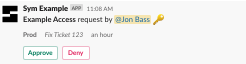
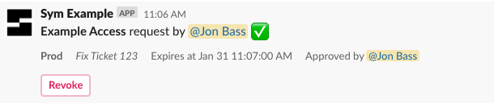
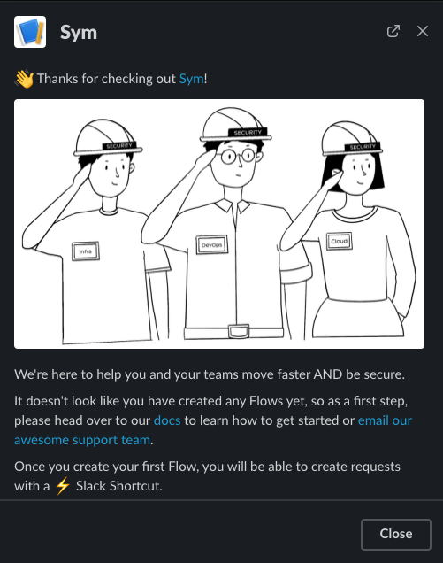
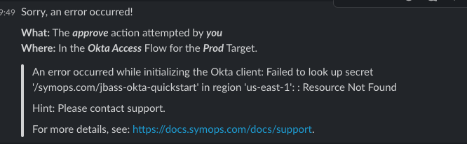

Sym helps engineering teams automate security workflows with a sophisticated access management platform that lets you bring audited & automatic just-in-time access to AWS resources, SQL databases, internal apps & dashboards, and a variety external SaaS products. Workflows are provisioned via infra-as-code, often right beside the definitions of the resources they protect, and are easily customizable with our Python SDK.
If you want to check out a demo, go here!
Workflow
Today I want to walk you through setting up a simple access control workflow using Slack, Okta and Sym. By the end of this tutorial, you'll have the ability to wrap any resource in Okta with a fully-configurable request-and-approval flow, using a declaratively provisioned Slack bot.
The complete code for this tutorial can be found at @symopsio/sym-okta-quickstart.
What will it look like?
Users will interact with this Sym Flow via Slack. Slack connects to the Sym platform, which executes a Flow that use the Integrations we are wiring together in this tutorial.

Making Requests
This is what a request will look like.

Sym will send a request for approval to the appropriate users or channel based on your impl.py.

Finally, upon approval, Sym gives you access to the Okta group and updates Slack.

To complete this tutorial, you should install Terraform, and make sure you have a working install of Python 3.
What's Next
The app environment includes everything you need to get an Okta workflow up and running. Just configure a few variables in terraform.tfvars and you're on your way!
Here's all that you'll need to do:
- [ ] Set up the
symflowCLI - [ ] Install the Sym Slack app
- [ ] Configure your Slack channels
- [ ] Test your deploy flow
- [ ] Set up your Okta API token
- [ ] Set up your Okta
Targets - [ ] E2E test and more goodies!
You'll need to work with the Sym team to get your organization set up with access to the Sym platform. Once you're onboarded, continue from here.
Install the symflow CLI
The symflow CLI is what you use to interact with Sym's control plane.
$ brew install symopsio/tap/symflow
==> Tapping symopsio/tap
Cloning into '/opt/homebrew/Library/Taps/symopsio/homebrew-tap'...
remote: Enumerating objects: 1148, done.
remote: Counting objects: 100% (285/285), done.
remote: Compressing objects: 100% (222/222), done.
remote: Total 1148 (delta 134), reused 156 (delta 59), pack-reused 863
Receiving objects: 100% (1148/1148), 324.27 KiB | 6.36 MiB/s, done.
Resolving deltas: 100% (530/530), done.
Tapped 14 formulae (43 files, 582.7KB).
==> Downloading https://github.com/symopsio/sym-flow-cli-releases/releases/download/v1.3.7/sym-flow-cli-darwin-x64.tar.gz
######################################################################## 100.0%
==> Installing symflow from symopsio/tap
🍺 /opt/homebrew/Cellar/symflow/1.3.7: 10,351 files, 198MB, built in 33 second
Login
We'll have to login before we can do anything else. Sym also supports SSO, if your organization has set it up.
$ symflow login
Sym Org: healthy-health
Username: yasyf@healthy-health.co
Password: ************
MFA Token: ******
Success! Welcome, Yasyf. 🤓
Set your Org slug
You simply have to take the slug given to you by the Sym team, and set it in app/terraform.tfvars.
# app/terraform.tfvars
sym_org_slug = "healthy-health"
Now that you've got symflow installed, you need to install Sym's Slack app into your workspace.
Grab your Workspace ID
The easiest place to find this is in the URL you see when you run Slack in your web browser. It will start with a T, and look something like TABC123.
This also goes in app/terraform.tfvars.
# app/terraform.tfvars
slack_workspace_id = "TABC123"
Provision your Slack app
symflow has a convenient way to provision an instance of Sym's Slack app. This command will generate an install link that you can either use directly, or forward on to your Workspace Administrator.
$ symflow services create --service-type slack --external-id T123ABC
Successfully set up service type slack with external ID TABC123!
Generated an installation link for the Sym Slack app:
https://static.symops.com/slack/install?token=xxx
Please send this URL to an administrator who has permission to install the app. Or, if that's you, we can open it now.
Would you like to open the Slack installation URL in a browser window? [Y/n]:
Once Slack is set up, try launching the Sym app with /sym in Slack.
You should see a welcome modal like this one, since we haven't set up a Flow yet:

This Flow is set up to route access requests to the #sym-requests channel. You can change this channel in—wait for it—terraform.tfvars.
Sym will also send any errors that happen during a Run (due to external failures or config issues) to a configurable error channel. You'll never guess where you can configure this.
# app/terraform.tfvars
flow_vars = {
request_channel = "#sym-requests"
}
You can also change the channel that errors are routed to, which defaults to #sym-errors.
# app/terraform.tfvars
error_channel = "#sym-errors"
Now that Slack is set up, let's provision your flow! The Okta Integration isn't ready quite yet, but we can at least make sure all the pipes are connected.
$ export AWS_PROFILE=my-profile
$ cd app
$ terraform apply
...
Plan: 18 to add, 0 to change, 0 to destroy.
Do you want to perform these actions?
Terraform will perform the actions described above.
Only 'yes' will be accepted to approve.
Enter a value: yes
Apply complete! Resources: 18 added, 0 changed, 0 destroyed.
Try out a request!
You should be able to make a request now with /sym req, though you'll get an error when you try to approve access, since we haven't configured Okta yet.
Check in your errors_channel and you should see something like this:

Sym stores your Okta API token in an AWS Secrets Manager value. By default, the sym-runtime module sets up a shared AWS Secrets Manager secret that you add key/value pairs to for the secrets that your Runtime needs to access.
Create your API token
Follow our Okta setup instructions to create an Okta API token that has access to manage your target groups.
Set your API token in Sym
Configure the API key in the AWS Secrets Manager secret configured by your sym-runtime module like so.
$ OKTA_API_TOKEN=xxx
$ aws secretsmanager put-secret-value \
--secret-id /symops.com/shared \
--secret-string "{\"okta_api_token\": \"$OKTA_API_TOKEN\"}"
Identify the initial Okta groups that Sym will move users in and out of. You can always change and modify these groups later, so we recommend starting with an existing group or creating a temporary group for testing.
Set Group IDs
Get the IDs of the Okta groups that you'll be starting with. Configure these in okta_targets in terraform.tfvars.
# app/terraform.tfvars
okta_targets = [
{
label = "AWS Ops Admin",
group_id = "CHANGEME"
}
]
Set Okta domain
Set your Okta domain as well.
# app/terraform.tfvars
okta_org_domain = "xxx.okta.com"
Now that you've configured your Okta Targets, its time to reapply your Terraform configs and validate that your integration works end-to-end.
Run a terraform apply and then request access to your Okta target. Once complete, your request should be approved with no errors!
$ terraform apply
...
Plan: 0 to add, 3 to change, 0 to destroy.
Do you want to perform these actions?
Terraform will perform the actions described above.
Only 'yes' will be accepted to approve.
Enter a value: yes
Apply complete! Resources: 0 added, 3 changed, 0 destroyed.
What's next?
Here are some next steps to consider:
- Set up reporting. Ship audit data to a flexible group of
LogDestinations. - Update your
Flowto require that users be members of a certain Okta group to approve access:- Configure
flow_vars.approver_groupwith the Okta group ID interraform.tfvars. - Uncomment the
hookannotation on theon_approvemethod inimpl.py. This is just one example of what you can do with hooks in the SDK!
- Configure
- Manage users. Sym handles the "happy path" where user emails match across systems automatically. You can use the
symflowCLI to configure user mappings when required. - Iterate on your
Flowlogic. Maybe change things to allow self-approval only for on-call users? - Set up another access
Flow!